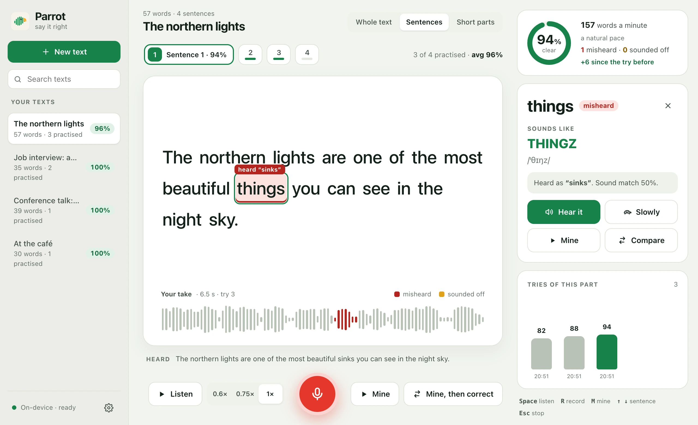
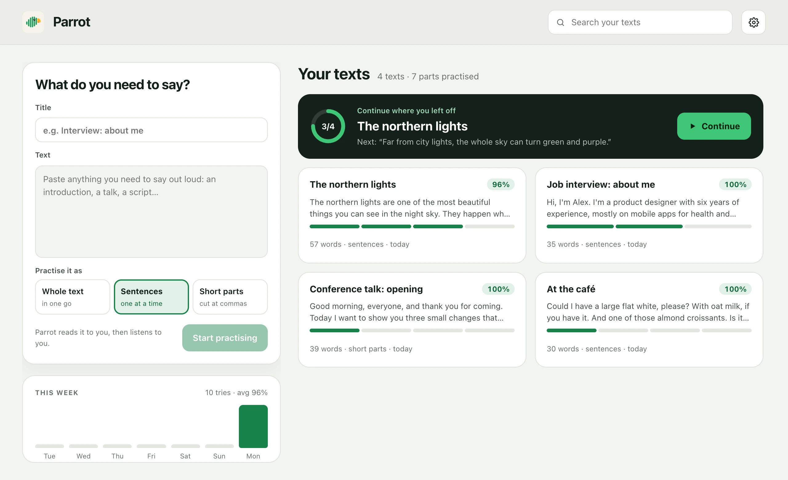

Paste anything you need to say out loud. Parrot reads it to you, listens to you read it, and shows exactly which words came out wrong, and how they should sound.

Look up one word online and you hear it alone. Parrot checks what you actually need to say: a whole introduction, a talk, a script.
Every word you read gets a verdict. Misheard when a listener would hear another word, sounded off when it was close but not right.
Click a word to see it spelled the way it sounds, sik·STEEN, with its IPA, and hear it alone or slowed down.
Play your own word cut out of your recording, then the correct one right after it. The difference is easy to hear side by side.
Paste anything. Practise it whole, sentence by sentence, or in short parts cut at commas, and switch any time.
Whisper runs on your computer, not in the cloud. No account, no upload: your voice and your recordings stay on your disk.
Every try is kept. Watch a sentence go from 71% to 94%, and your pace settle into the natural 140 to 165 words a minute.
Parrot reads the sentence to you at the speed you choose, lighting up each word as it is spoken.
Press the red button, read it aloud, press it again. Parrot cleans up the recording and listens to it twice.
See which words came out wrong, on the sentence and on the waveform of your take. Click one, hear it, try again.

For macOS, Windows and Linux. The speech model (about 470 MB) downloads the first time you open it; after that Parrot works offline.
All releases and source code are on GitHub.